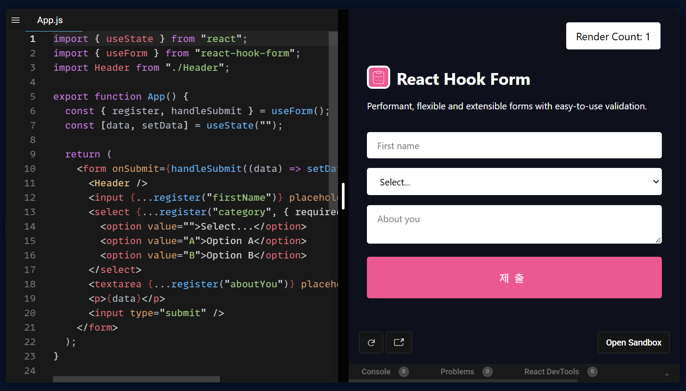

React Hook Form의 폼 상태 관리 구조
폼 상태 관리가 필요한 이유
React에서 여러 개의 입력값을 관리할 때 가장 단순한 방법은
useState를 사용하는 것입니다.
하지만 폼이 커질수록 상태가 많아지고 코드가 복잡해집니다.
const [email, setEmail] = useState("")
const [password, setPassword] = useState("")
const [nickname, setNickname] = useState("")
입력값이 많아질수록 상태 관리가 어려워지고, 유효성 검사(validation) 로직까지 추가되면 코드가 급격히 복잡해집니다.
또한 모든 데이터를 전역 상태(zustand 등)로 관리하면
- 불필요한 메모리 사용
- 예상하지 못한 상태 변경
- 디버깅 난이도 증가
같은 문제가 발생할 수 있습니다.
이러한 문제를 해결하기 위해 많이 사용하는 라이브러리가 React Hook Form입니다.
React Hook Form이란?
React Hook Form(RHF)은 React에서 폼 상태 관리와 유효성 검사를 쉽게 처리할 수 있도록 도와주는 라이브러리입니다.
특히 다음과 같은 장점이 있습니다.
- 불필요한 리렌더링 최소화
- 간단한 API
- 외부 validation 라이브러리(Zod, Yup)와 연동 가능
- 폼 상태 관리 자동화
useForm
useForm은 React Hook Form의 핵심 Hook입니다.
폼의 상태와 유효성 검사를 관리합니다.
const {
register,
handleSubmit,
formState: { errors }
} = useForm()
기본적으로 다음과 같은 기능을 제공합니다.
- 폼 상태 관리
- 입력값 추적
- 유효성 검사
- 에러 상태 관리
useForm 주요 옵션
useForm은 다양한 옵션을 제공합니다.
- mode
- reValidateMode
- defaultValues
- resolver
- shouldFocusError
- criteriaMode
reValidateMode
입력값의 유효성 검사를 언제 다시 실행할지 결정하는 옵션입니다.
| 옵션 | 설명 |
|---|---|
| onSubmit | 폼 제출 시에만 검증 |
| onBlur | input에서 포커스가 벗어날 때 검증 |
| onChange | 입력값이 변경될 때마다 검증 |
| onTouched | 처음 blur 이후 change에서 검증 |
| all | blur와 change 모두에서 검증 |
defaultValues
폼의 초기값을 설정하는 옵션입니다.
const form = useForm({
defaultValues: {
email: "",
password: ""
}
})
폼이 처음 렌더링될 때 기본값으로 사용됩니다.
주의할 점은 다음과 같습니다.
- undefined 값을 기본값으로 사용하지 않는 것이 좋음
- defaultValues는 캐싱됨
- 초기화를 위해서는 reset API 사용
resolver
resolver는 외부 validation 라이브러리와 연결할 때 사용합니다.
대표적으로 다음 라이브러리와 함께 사용됩니다.
- Zod
- Yup
- Joi
const form = useForm({
resolver: zodResolver(schema)
})
resolver를 사용할 경우 React Hook Form의 기본 validation(required 등)은 사용하지 않는 것이 일반적입니다.
useController
useController는 React Hook Form에서
외부 UI 라이브러리와 함께 사용할 때 유용한 Hook입니다.
예를 들어 다음과 같은 UI 라이브러리와 함께 사용됩니다.
- MUI
- Ant Design
- Chakra UI
입력 컴포넌트를 React Hook Form 상태와 연결해줍니다.
useController 주요 props
| props | 설명 |
|---|---|
| name | 폼 필드 이름 |
| control | useForm에서 전달받은 control 객체 |
| defaultValue | 입력 필드 초기값 |
| rules | 유효성 검사 규칙 |
useController 반환 값
useController는 다음과 같은 객체를 반환합니다.
field
- onChange
- onBlur
- value
- name
- ref
fieldState
- invalid
- isTouched
- isDirty
- error
formState
폼 전체 상태를 나타냅니다.
- isDirty
- isSubmitting
- isSubmitted
- isValid
- submitCount
- errors
정리
React에서 폼 상태를 관리할 때
단순한 useState 방식은 규모가 커질수록 관리가 어려워집니다.
React Hook Form을 사용하면
- 폼 상태 관리 단순화
- 유효성 검사 통합
- 성능 최적화
와 같은 장점을 얻을 수 있습니다.
특히 Zod와 함께 사용하면 타입 안정성과 validation을 동시에 관리할 수 있어 최근 React 프로젝트에서 많이 사용되는 방식입니다.